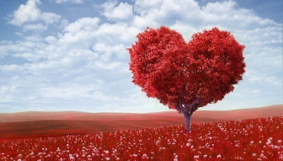

Творческое объединение
"Открытый университет"
Структура университета
Молодежная площадка "Psy-Party"
Гродненское областное общественное объединение
практических психологов
Гродзенскае абластное грамадзянскае аб`яднанне
практычных псiхолагау
Grodno Regional Civil Organization of Practical Psychologists

ПРОГРАММА
образовательной площадки «PSY-PARTY»


Аннотация программы

Автор программы
Контактные линии:
Телефон: +375 29 2857057
E-mail: PlanetaSchastia@mail.ru
www.psycholog.p.ht/index.php
SKYPE: VENSKA-PSY
Венско Ольга Иосифовна - старший преподаватель
кафедры
возрастной и
педагогической психологии
факультета психологии учреждения образования «Гродненский
государственный университет
имени
Янки
Купалы»; организационный психолог Гродненского филиала РУП «Белпочта»;
психолог-консультант
Гродненского областного общественного объединения практических
психологов; кризисный
психолог,
травмотерапевт; координатор студии развития «Планета счастливых людей»;
магистр
психологии,
ученый-исследователь кафедры психологии управления ГУО «Академия
управления при
Президенте
Республики Беларусь»
Контактные линии:
Телефон: +375 29 2857057
E-mail: PlanetaSchastia@mail.ru
www.psycholog.p.ht/index.php
SKYPE: VENSKA-PSY
Венско Ольга Иосифовна - старший преподаватель кафедры возрастной и педагогической психологии факультета психологии учреждения образования «Гродненский государственный университет имени Янки Купалы»; организационный психолог Гродненского филиала РУП «Белпочта»; психолог-консультант Гродненского областного общественного объединения практических психологов; кризисный психолог, травмотерапевт; координатор студии развития «Планета счастливых людей»; магистр психологии, ученый-исследователь кафедры психологии управления ГУО «Академия управления при Президенте Республики Беларусь»
Структура образовательной площадки «PSY-PARTY»
Секция № 1. Психология и педагогика как науки, прикладное мастерство и будущие профессии.
Секция № 2. Психология здоровья. Возрастная психогигиена.
Секция № 3. Психология стиля. Имиджеология.
Секция № 4. Психология отношений. Пластика вербального и невербального общения. Межличностное взаимодействие. Дружба, влюблённость, любовь.
Секция № 5. Психология деловых отношений. Профориентация. Выбор профессии. Моделирование карьеры.
Секция № 6. Психология семьи. Детско-родительские отношения.
Нормативно-инструктивное регулирование деятельности образовательной площадки «PSY-PARTY»
- Закон Республики Беларусь «Об оказании психологической помощи»
- Закон Республики Беларусь «О занятости населения Республики Беларусь»
- Закон Республики Беларусь «Об основах государственной молодежной
политики» и
Концепции
развития профессиональной ориентации молодежи в Республике Беларусь
- Кодекс Республики Беларусь об образовании
- Положение Совета министров Республики Беларусь «О
социально-психологической и
психологической
службе»
- Декрет Президента Республики Беларусь «О дополнительных мерах по
государственной
защите
детей
в неблагополучных семьях» от 24 ноября 2006 г. №18
- Устав ГУО «Средняя школа № 38 г. Гродно»
Ресурсное обеспечение деятельности образовательной площадки «PSY-PARTY»
Канцтовары и расходные материалы
- Флипчат.
- Зажимы разных размеров – 10 шт.
- Магниты для доски -10 шт.
- Набор маркеров – 4 ярких цвета.
- Бумага – формат А4 - 3 пачки.
- Бумага цветная для принтера - формат А4 - 1 пачка.
- Ватман – формат А1 – 10 шт.
- Бумага – формат А3 - 10 шт.
- Блоки цветной бумаги – 20 альбомов - двусторонняя.
- Гофрированная бумага, разноцветная – 10 рулонов.
- Скрепки – 2 пачки.
- Блок бумаги для записей – 2 уп.
- Декоративные камешки.
- Метафорические ассоциативные карты.
- Цветные карандаши – 6 упаковок по 6 классических цветов; 2-3 точилки к
ним.
- Цветная пастель в мелках – 3 упаковки.
- Ручки шариковые – 50 шт.
- Визитки (или карточки их имитирующие)- 100 шт.
- Ножницы – 10 пар.
- Скотч (малярный; тонкий канцелярский; широкий канцелярский).
- Клей ПВА – 40 гр – 10 баночек.
- Белый картон – 20 листов.
- Цветной картон – 5 альбомов.
- Изготовление ксерокопий оригинальных бланков диагностических и
раздаточных материалов.
Место проведения секций:
- Актовый зал – для совместных мероприятий
- Аудитории учебного корпуса – 6 классов
Организационно-методические и научно-прикладные методы работы образовательной площадки «PSY-PARTY»
Работа площадки обеспечивается интерактивными формами обучения, воспитания,
развития
учащихся:
- Психологическая гостиная «Ее Величество Жизнь».
- Интерактивная арт-студия «Краски жизни».
- Психологический коллаж и психологическая панорама.
- Творческая мастерская «Оазис Души».
- Психологическое моделирование и конструирование жизненного пространства.
- Рефлексивная площадка (психотехники свободного ассоциирования, «роза
ветров» жизненного
пути
и
др.).
- Аутотренинг совладания «Я - Хозяин Судьбы».
- Игротехническая мастерская «Калейдоскоп счастливых событий года».
- Тренинг ассертивности (элементы).
- Тренинг креативного планирования жизненного пространства (элементы).
- Тренинг профориентационный.
- Психологическая чаёвница «Разговор по душам».
- Мастер-класс по имиджеологии.
- Мастер-классы Фестиваля практической психологии
- и др.
Секция № 1. Психология и педагогика как науки,
прикладное мастерство и
будущие профессии.
- Общее количество часов за учебный год: 27
часов.
- Общая продолжительность занятия: 1
академический час.
- База проведения занятий:
- ГУО «Средняя школа № 38 г. Гродно» - актовый зал,
тренажёрный зал, библиотека,
учебно-методический кабинет, каб. 230, каб. 436
- Выездные кинолектории на базе малого зала кинотеатра
«Октябрь» г. Гродно
- Факультет психологии ГрГУ им.Я.Купалы – каб. 11, каб. 34 -
БЛК-21
- Учитель факультативных занятий по
программе «Профессия – педагог»: Венско О.И.,
педагог-психолог, преподаватель факультативных занятий по
психологии, заведующий
филиалом
кафедры возрастной и педагогической психологии ГУО «Средняя школа
№38 г. Гродно»;
ст.преподаватель кафедры возрастной и педагогической психологии
факультета психологии
ГрГУ
им.Я.Купалы; магистр психологии, аспирант кафедры психологии
управления ГУО «Академия
управления при Президенте Республики Беларусь»; организационный
психолог Гродненского
филиала РУП «Белпочта»; психолог-консультант Гродненского областного
общественного
объединения практических психологов, координатор линии
психологической помощи и
психотерапии
«Планета счастливых людей».
- ГУО «Средняя школа № 38 г. Гродно» - актовый зал, тренажёрный зал, библиотека, учебно-методический кабинет, каб. 230, каб. 436
- Выездные кинолектории на базе малого зала кинотеатра «Октябрь» г. Гродно
- Факультет психологии ГрГУ им.Я.Купалы – каб. 11, каб. 34 - БЛК-21
| П.№ | Модуль факультатива | Тема занятия | Дата проведения | Количество часов |
|
Вторая четверть |
||||
| 1 | Человек и профессия | Педагогическая профессия сегодня: проблемы, поиски, перспективы. Выбор педагогической профессии: «за» и «против» | 1 | |
| 2 | Образование как социокультурный феномен | Тенденции, проблемы и перспективы развития современного образования | 1 | |
| Интерактивный семинар с включенным диспутом «(Не)детские вопросы о школе» | 1 | |||
| Педагогика как наука и практика | 1 | |||
| Творческая лаборатория «Педагогика без границ»: роль педагога в образовании | 1 | |||
| Этика и психология педагогической деятельности. Творческая мастерская «Учитель, которого ждут» | 1 | |||
| Тренинг ассертивности | 1 | |||
|
Третья четверть |
||||
| 2 | Образование как социокультурный феномен | Психологическая гостиная «Педагогическая триада» | 1 | |
| Арт-студия «Психологический портрет педагога» | 1 | |||
| 3 | Основы профессиональной деятельности педагога | Педагогическое общение как форма взаимодействия педагога и учащихся | 1 | |
| Творческая лаборатория «Слагаемые мастерства в общении» | 1 | |||
| Эмпатия в педагогическом общении | 1 | |||
| Тренинг эмпатии | 1 | |||
| Арт-студия «Мастерская Души» | 1 | |||
| Педагогическая техника как элемент педагогического мастерства: форум-театр как технологии педагогического искусства управления аудиторией и разрешения жизненных ситуаций | 1 | |||
| Тренинг креативности | 1 | |||
| Психогигиена профессиональной деятельности педагога | 1 | |||
|
Четвертая четверть |
||||
| 3 | Основы профессиональной деятельности педагога | Конфликты и пути их разрешения. Технология практической медиации. Тренинг оптимизации психологического климата в коллективе | 1 | |
| Личность ребёнка и детский коллектив. Тренинг командообразования | 1 | |||
| Культура речи педагога и искусство публичного выступления. Тренинг ораторского искусства | 1 | |||
| Имидж современного педагога. Арт-студия «Имидж-салон» | 1 | |||
| 4 | Личность и индивидуальные возможности. Психология личностного роста | Развитие профессионально значимых качеств личности. Самосовершенствование педагога: самопознание, самообразование, самовоспитание, самосознание | 1 | |
| Моделирование профессиональной карьеры. Творческая лаборатория «Моя образовательная траектория» | 1 | |||
| Педагогическая направленность в структуре личности учителя. Деловая игра «Хочу-Могу-Надо» | 1 | |||
| Творческий потенциал педагога. Разработка творческих проектов «Школа будущего», «Образование 2013», «Педагог будущего» | 1 | |||
| Защита творческих проектов | 1 | |||
Секция № 2. Психология здоровья. Возрастная психогигиена.
Цель секции.
Главная цель курса состоит в ознакомлении слушателей с современным системным подходом к научно-практическому анализу широкого спектра вопросов психогигиены как научной отрасли и практики психотерапевтической охраны здоровья на разных возрастных этапах.
Слушатели познакомятся с феноменом психического здоровья, системой оптимизации профессионально-личностного благополучия, инновационными технологиями оздоровления личностного функционирования (профилактика стрессов, управление конфликтами, оптимизация картины мира человека, гармоничное проектирование и проживание всех этапов жизненного пути согласно концепции позитивного мышления, техники соблюдения суверенитета личности).
Содержание курса «Возрастная психогигиена» поспособствует погружению слушателей в комфортную глубокую рефлексию относительно собственной психологической конформности, социально-психологической компетентности в разных сферах человеческой жизнедеятельности.
Прикладные задачи курса. Курс «Возрастная психогигиена» носит научно-прикладной характер и предназначен для формирования знаний, навыков и умений в организации собственной эффективной жизнедеятельности в разных сферах человеческой жизнедеятельности.
По окончанию секции слушатели будут знать концепцию гармоничной жизнедеятельности человека, закономерности развития вектора жизненного пути, модель оптимизации мышления и картины мира.
В рамках реализации учебной программы курса «Возрастная психогигиена» предусмотрены практические занятия в интерактивном формате самоисследования и оптимизации жизненной позиции. По окончанию секции слушатели будут уметь управлять личностным функционированием, энергией созидания и автореконструированием.
По окончанию секции слушатели преобразуют отношение к ценности жизни в подростковом и юношеском возрасте, смогут оптимизировать самоотношение и самопринятие, активизируют социальные компетенции, смогут пересмотреть перспективность жизненного пути.
Целевая группа секции – все желающие слушатели. Количество человек в одной группе 12-16 человек (для достижения максимального эффекта позитивного преобразующего воздействия на личность).
Общая продолжительность секции: 12 академических занятий по 1,5 часа (18 часов).

График работы секции
| П.№ | Направление работы и тема занятия | Даты | Время | Результаты деятельности |
| 1 |
Тема 1. Представление о жизнедеятельности в возрастной
психогигиене.
Представление о
здоровом личностном функционировании на разных этапах
зрелости.
Дополнительно: Феномен удовлетворенности жизнью в позитивной психологии. Осознание ценности жизни (Селигман, Чиксентмихайи, 2000). Материалистическое сознание и удовлетворенность жизненными обстоятельствами (Динер, 2000). |
Проективные рисуночные тесты по изучению целостной личностной модели. | ||
| 2 |
Тема 2. Картина мира человека.
|
Психологическое эссе «Вселенная моего Я». | ||
| 3 | Тема 3. Оптимизация картины мира человека Интерактивная арт-студия «Краски жизни». | Психологические коллажи и психологические панорамы. | ||
| 4 |
Тема 4. Жизненная позиция человека.
|
Конструктор жизненного пространства. Техника «роза ветров». | ||
| 5 |
Тема 4. Жизненная позиция человека.
5.Вектор времени ЖПЧ. 6.Управление ЖПЧ (совладание как феномен управление жизненной ситуацией). |
Памятка по механизмам совладания «Хозяин Судьбы». | ||
| 6 |
Тема 5. Самогенный потенциал личности.
|
Творческая мастерская «Оазис Души». | ||
| 7 |
Тема 6. Психологическая устойчивость личности.
|
Техника «Калейдоскоп счастливых событий года» | ||
| 8 | Тема 6. Психологическая устойчивость личности. Технология психологических тренировок в поздней зрелости. | Мини-тренинг «Планета счастливых людей». | ||
| 9 | Тема 7. Субъективное благополучие и настроение личности. | Авторские студии на основе проектов слушателей УЗВ | ||
| 10 | Тема 8. Личная психогигиена. | Участие слушателей УЗВ в мастер-классах Фестиваля практической психологии (ГУО «Средняя школа № 38 г. Гродно») | ||
| 11 | Тема 9. Психологическая гостиная «Ее Величество Жизнь» (итоговое занятие секции). | Киноклуб на базе кинотеатра «Октябрь» (ул. Поповича, 3) | ||
| 12 | Отчетно-аналитическая деятельность по выполнению учебной нагрузки | Отчет о результатах работы секции | ||
| 13 | Участие в выпускном вечере для слушателей секций. | вечеринка |
Варианта выпускных проектов в рамках работы слушателей на секции:
- Оформление и защита портфолио «Моя социально-ролевая
компетентность».
- Оформление и защита портфолио «Моя счастливая
семья».
- Оформление и защита портфолио «Вселенная моей Счастливой Судьбы».
- Создание и защита программы «Психогигиена
личности» (слушатели
выступают в качестве
авторов
и ведущих гостиных, творческих мастерских).
| № п/п | Список литературных источников по курсу «Возрастная психогигиена» |
| Основная | |
| 1. | Демьянов Ю.Г. Основы психопрофилактики и психотерапии: Пособие для студентов психологических факультетов университетов. - Спб.: «Паритет», 1999. - 224с. |
| 2. | Ильин Е.П. Психология индивидуальных различий. - СПб.: Питер, 2004. - 701с: ил. - (Серия «Мастера психологии»). |
| 3. | Лэндрет Г.Л. Игровая терапия: искусство отношения. - М., Смысл, 1994. |
| 4. | Мадди Сальваторе Р. Теории личности: сравнительный анализ/ Пер. с англ. - СПб.: Изд-во «Речь», 2002. - 539с. |
| 5. | Мучински П. Психология, профессия, карьера. - 7-е изд. - СПб.: Питер, 2004. - 539 с: ил. - (Серия «Мастера психологии»). |
| 6. | Платонов Ю.П. Социальная психология поведения: Учебное пособие. - СПб.: Питер, 2006. - 464 с: ил. - (Серия «Учебное пособие»). |
| 7. | Росс Л., Нисбетт Р. Человек и ситуация. Перспективы социальной психологии / Пер. с англ. Под ред. Е.Н.Емельянова, В.С.Магуна. - М: Аспект Пресс, 1999. |
| 8. | Социальная психология: Хрестоматия: Учебное пособие для студентов вузов / Сост. Е.П.Белинская, О.А.Тихомандрицкая. - М.: Аспект Пресс, 1999. - 475 с. |
| 9. | Холл Р.Х. Организации: структуры, процессы, результаты. - СПб.: Питер, 2001. |
| 10. | Черноушек М. Психология жизненной среды / Пер. с чеш. И.И.Попа. - М.: Мысль, 1989.- 174 с. |
| 11. | Шарухин А.П. Психология менеджмента: Учебное пособие. - СПб.: Речь, 2005. - 352 с. |
| Дополнительная | |
| 12. | Никитин В.Н. Психология телесного сознания. - М.: Алетейа, 1998. - 488 с: илл. |
| 13. | Овчарова Р.В. Справочная книга школьного психолога. - 2-е изд., дораб. - М.: «Просвещение», «Учебная литература», 1996. - 352 с. |
| 14. | Пезешкиан Н. Психосоматика и позитивная психотерапия. - М., 1993. |
| 15. | Подвойский М.А. Уроки психологии в школе. - М., 1993. |
| 16. | Практика психосинтеза: упражнения, направленные на развитие личности и достижение духовного роста./ Сост. Дж.Томас. - СПб., 1992. |
| 17. | Прутченков А.С. Тренинг личностного роста. - М., 1993. |
Секция № 5. Психология деловых отношений. Профориентация. Выбор профессии. Моделирование карьеры.
Для человека с талантом и любовью
к труду не существует преград.
Л.Бетховен
Первая серьёзная жизненная проблема, с которой сталкиваются старшеклассники, - это выбор будущей профессии. Вопрос «Кем я буду?» задаёт себе каждый молодой человек. И здесь главное – не растеряться, сориентироваться и сделать правильный выбор, соответствующий интересам, способностям, возможностям, ценностным установкам и требованиям, которые предъявляют профессии к личности кандидата. Правильно сделанный подростком выбор – это начало пути к успеху, к самореализации, к психологическому и материальному благополучию в будущем.
Выбор профессии – один из судьбоносных периодов в жизни любого человека. Так, К.Д. Ушинский писал: «Если вы удачно выберете труд и вложите в него свою душу, то счастье само вас отыщет». К сожалению, нужно признать, что под влиянием социально-экономических и политических процессов 90-ых гг. 20 века путь к профессиональному счастью оказался для многих наших современников траекторией сложных испытаний в силу стихийного, а подчас и просто необдуманного принятия решения «куда пойти учиться». Результаты сложных профессиональных «поисков себя» на рынке труда мы ежедневно наблюдаем в жизни наших близких, знакомых, друзей, а также в консультационном процессе.
Программа поэтапной психологической диагностики профессионального самоопределения учащихся среднего и старшего звена ГУО «Средняя школа № 38 г. Гродно»
| Возрастная группа | Классы | Блок диагностики | Количество оптантов |
|
Подростковый возраст – 12-14 лет |
7-8 классы |
диагностика познавательных процессов (особое внимание –
раздел «мышление» и «речь») |
|
|
Подростковый возраст – 12-14 лет |
7-8 классы | диагностика типа темперамента и особенностей (в том числе и акцентуаций) характера | |
|
Подростковый возраст – 12-14 лет |
7-8 классы | диагностика интересов, способностей, направленности личности | |
|
Подростковый возраст – 12-14 лет |
7-8 классы | диагностика психологического климата в группе | |
|
Младший юношеский возраст – 14,5-16 лет |
9 классы | диагностика эмоционально-волевой системы личности | |
|
Младший юношеский возраст – 14,5-16 лет |
9 классы | диагностика мотивационно-ценностной системы личности | |
|
Младший юношеский возраст – 14,5-16 лет |
9 классы | диагностика индивидуальных особенностей личности в процессах общения и межличностного взаимодействия | |
|
Младший юношеский возраст – 14,5-16 лет |
9 классы | диагностика компонентов ответственного поведения и способности к принятию решения | |
|
Подростковый возраст – 12-14 лет |
7-8 классы |
диагностика познавательных процессов (особое внимание –
раздел «мышление» и «речь») |
|
|
Подростковый возраст – 12-14 лет |
7-8 классы | диагностика типа темперамента и особенностей (в том числе и акцентуаций) характера | |
|
Подростковый возраст – 12-14 лет |
7-8 классы | диагностика интересов, способностей, направленности личности | |
|
Подростковый возраст – 12-14 лет |
7-8 классы | диагностика психологического климата в группе | |
|
Младший юношеский возраст – 14,5-16 лет |
9 классы | диагностика эмоционально-волевой системы личности | |
|
Младший юношеский возраст – 14,5-16 лет |
9 классы | диагностика мотивационно-ценностной системы личности | |
|
Младший юношеский возраст – 14,5-16 лет |
9 классы | диагностика индивидуальных особенностей личности в процессах общения и межличностного взаимодействия | |
|
Младший юношеский возраст – 14,5-16 лет |
9 классы | диагностика компонентов ответственного поведения и способности к принятию решения |
Дизайн молодежной образовательной площадки «PsyParty»
Дата, время проведения ___________________________
3анятие 1. Знакомство группы и психологов. Погружение в тематику личностного роста и профессионального самоопределения. Формирование комфортного психологического климата в группе. Интеграция группы.
Дата, время проведения ___________________________
3анятие 2. Образ Я. Структура личности: индивид, субъект деятельности, личность, индивидуальность, уникум, харизматик.
Дата, время проведения ___________________________
3анятие 3. Тип нервной системы. Тип темперамента.
Дата, время проведения ___________________________
3анятие 4. Тип нервной системы. Тип конституции тела. Психогигиена тела. Принятие своего тела в разных физиологических метаморфозах. Эстетика образа Я.
Дата, время проведения ___________________________
3анятие 5. Индивидуальные особенности человека: темперамент, характер, интеллект, познавательные психические процессы; настроение, эмоции, чувства.
Дата, время проведения ___________________________
3анятие 6. Характер человека и его проявления в поведении.
Дата, время проведения ___________________________
3анятие 7. Потребности и мотивы. Убеждения и ценности личности.
Дата, время проведения ___________________________
3анятие 8. Саморегуляция поведения в разных жизненных ситуациях.
Дата, время проведения ___________________________
3анятие 9. Задатки, способности, одаренность, таланты, гениальность. Сверхвозможности и сверхспособности человека: воля как инструмент достижений.
Дата, время проведения ___________________________
3анятие 10. Самосознание личности: самооценка, самоотношение, принятие себя и мира.
Дата, время проведения ___________________________
3анятие 11. Самопрезентация индивидуальности: речь, коммуникативная культура, уверенное поведение. Имидж и харизма.
Дата, время проведения ___________________________
3анятие 12. Самореализация человека: учебная деятельность, труд, творчество.
РУКОВОДИТЕЛЬ ПРОЕКТА И АВТОР ОБРАЗОВАТЕЛЬНЫХ ПРОГРАММ:
Венско Ольга Иосифовна, магистр психологических наук, ученый-исследователь в области инженерной психологии, психологии труда и эргономики, старший преподаватель кафедры возрастной и педагогической психологии Гродненского государственного университета имени Янки Купалы, модератор психологических событий в Гродно и регионе, председатель экспертной комиссии сертифицированных программ и заместитель председателя правления Гродненского областного общественного объединения практических психологов (ГОООПП), Действительный член Общероссийской профессиональной психотерапевтической лиги (Москва), региональный менеджер программ Тренингового центра «Сталкер» (Витебск), системный семейный психотерапевт, кризисный психолог, травмотерапевт, арт-терапевт, мастер метафорической психотерапии.
Контактные линии:
Телефон: +375 29 2857057
E-mail: PlanetaSchastia@mail.ru
www.psycholog.p.ht/index.php
SKYPE: VENSKA-PSY
SKYPE: Olga_Venska
Офис 1: 230025, г. Гродно, ул. К. Маркса, 29-412
Офис-2: 230025, г. Гродно, ул. Б. Троицкая, 46 (1 этаж)
Тренерский состав площадки
Санжиев Александр, Действительный член Гродненского областного общественного объединения практических психологов (ГОООПП), тренер студии развития «Планета счастливых людей»; семейный психолог, нлп-практик, сертифицированный системный семейный психотерапевт.
Лаврищева Валерия, Действительный член Гродненского областного общественного объединения практических психологов (ГОООПП), тренер студии развития «Планета счастливых людей»; семейный психолог, специалист по арт-терапии и метафорической психотерапии, сертифицированный системный семейный психотерапевт.
Образцы сертификатов по окончанию курсов
.jpg)
.jpg)
.jpg)
.jpg)